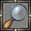
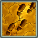
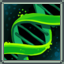
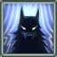

| Game Client Version | ||||
|---|---|---|---|---|
|  | Search | Multipurpose search tool based on game files but also the game wiki. | Download (64 bit Windows 10 only) |
v365 |
| Build | Experiment with skills, abilities and gear to design your own custom build in game. | Download (64 bit Windows 10 only) |
v365 | |
| Brew (please make sure you read this or you won't understand how it works) | Record your progress in brewing as you discover connections between materials, and forecast high-level results. | Download (64 bit Windows 10 only) |
N/A | |
|  | Completionist | (VIP Only) Check your character's progress in the game, and find abilities, recipes and skills not yet obtained. | Download (64 bit Windows 10 only) |
v365 |
|  | Breed (not on a page yet) | Manage your pool of bred pets and schedule mating for optimized selection. | Application not published yet. | N/A |
Pages and applications should support the same set of features.
Use your favorite browser if:
Use the Windows application if:
| Prepare your survey maps and collect them along a computer-assisted optimized path. Please make sure you read this or you won't understand how it works. |
Download (64 bit Windows 10 only) |
|
|  | Forecast of game moon phases with a quick-access icon in the taskbar. | Download (64 bit Windows 10 only) |
Downloaded game content v364 copyright © 2022, Elder Game, LLC.